Guía para principiantes
Bienvenido a Last Z Wiki — la guía en español más completa del juego, creada por jugadores F2P para jugadores F2P. Aquí encontrarás tier lists de edificios, guías de temporada, estrategias de combate, tablas de investigación y los mejores consejos para progresar sin gastar dinero.
Estrategias, edificios y recursos exclusivos de cada temporada
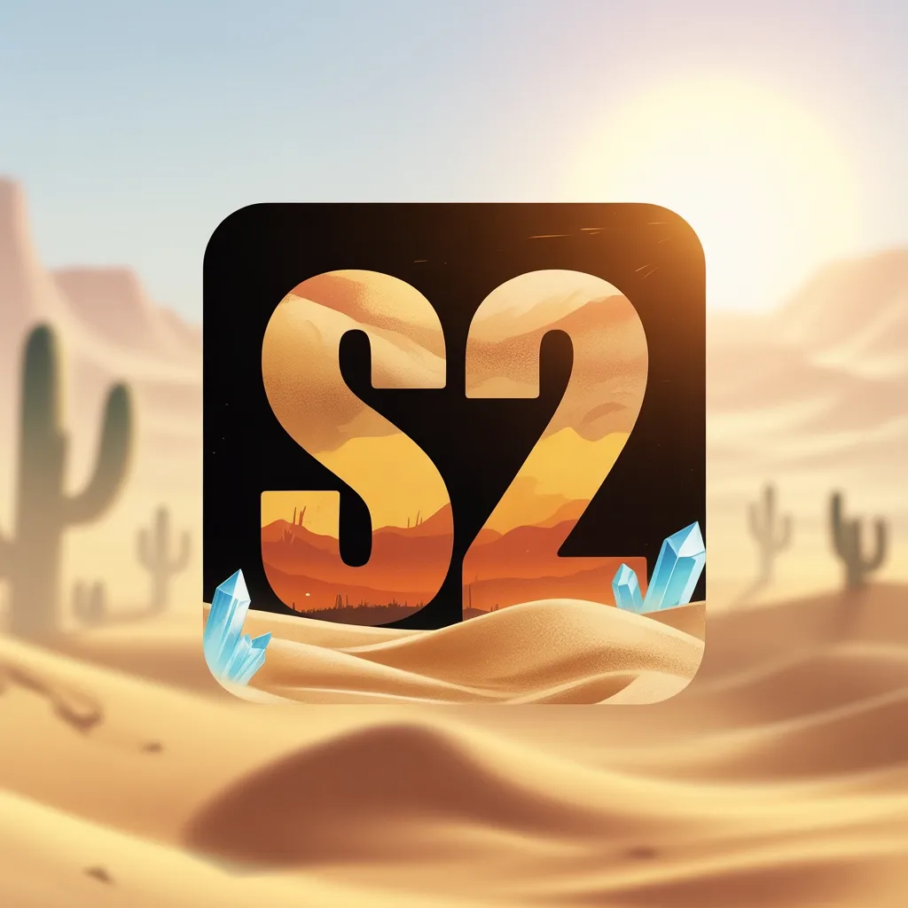
S2Guía completa del desierto — edificios, recursos y estrategias.
Ver guía →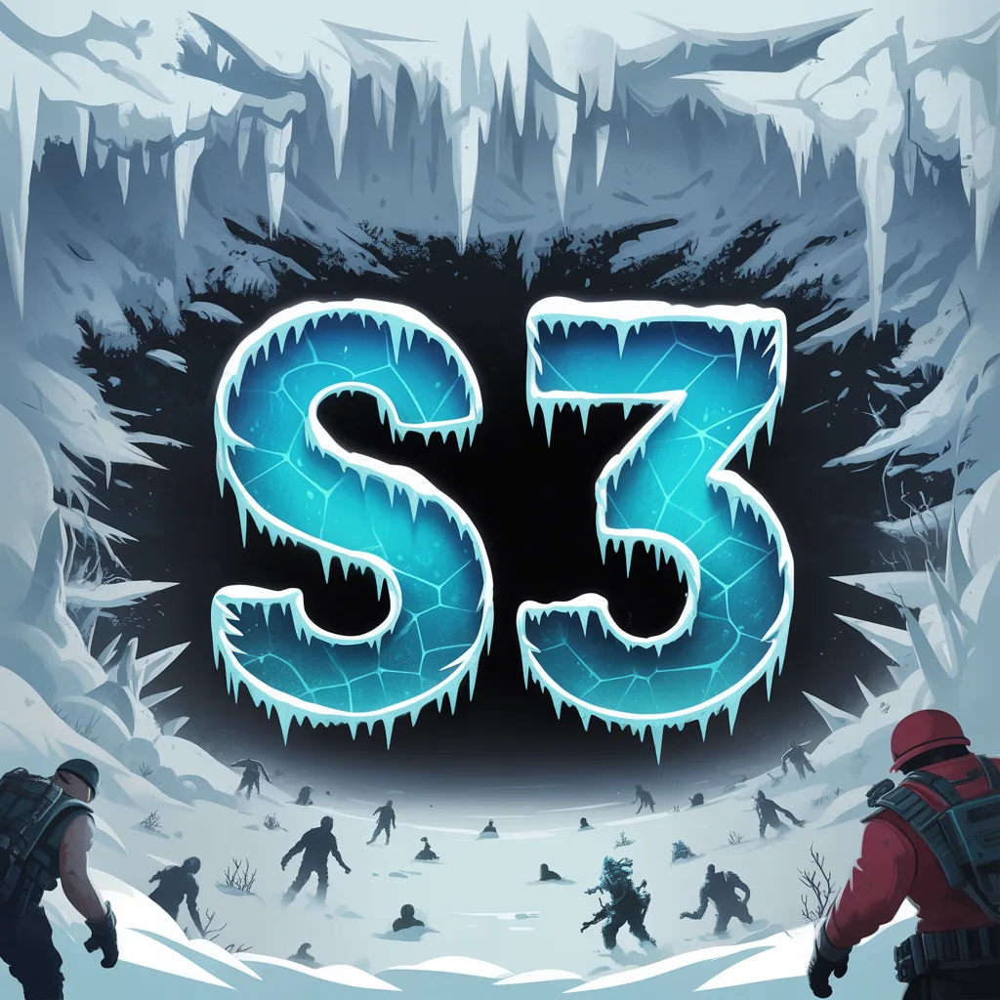
S3Guía del mundo de hielo — Laboratorio Biológico, Boomers y más.
Ver guía →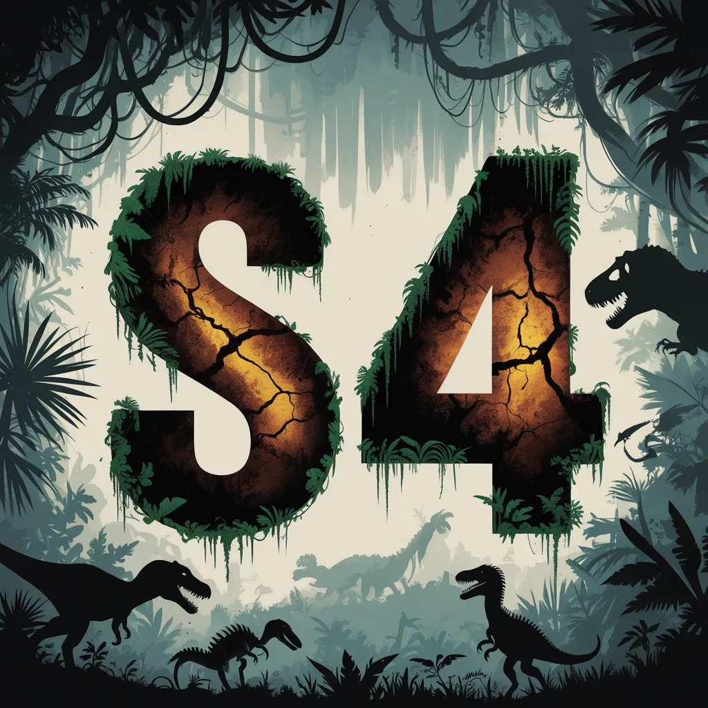
S4Dinosaur Origin — Velociraptors, Hatch of Legends y Trade Hubs.
Ver guía →Moonlit Elegy — Vampiros, Bruja Misteriosa, cartas de Luz Lunar y Súcubos.
Ver guía →Aprende estrategias clave para dominar Last Z: Survival Shooter
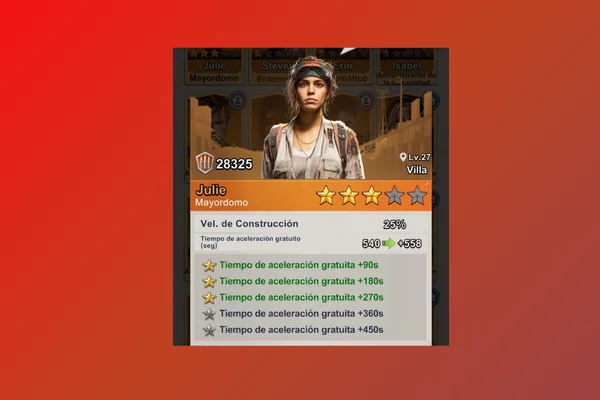
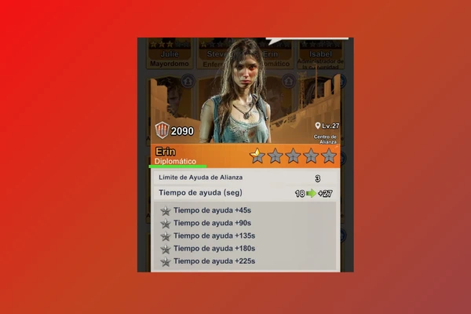
Los refugiados Mayordomo y Diplomático son los más valiosos del juego. Prioriza conseguirlos para acelerar tu progresión enormemente.
Leer más →

Si todos tus héroes de rango B tienen habilidades al máximo, ve al Almacén → Héroe y recicla los manuales azules sobrantes. Los conviertes en Cajas de Recursos que pueden darte Diamantes o Fragmentos S.
Leer más →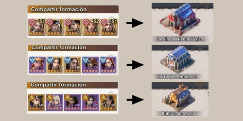
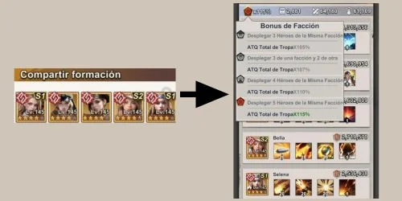
Alinea 5 héroes de la misma facción en cada tropa para obtener ATQ +115%. Prioriza Rosa Sangrienta en tu primera formación.
Leer más →

Transfiere tus mejores armaduras entre formaciones para maximizar rondas en Caravana. Pasa equipamiento de Rosa → Alba → Guardián según avances.
Leer más →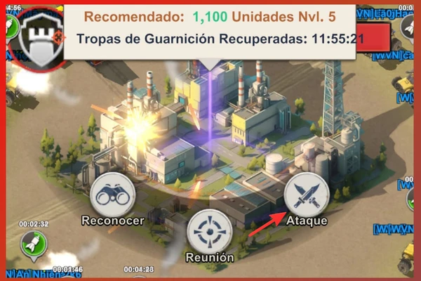
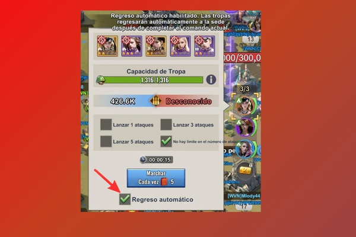
Antes de atacar, activa el casillero "Regreso automático". Así tus tropas regresarán solas después del combate sin tener que hacerlo manualmente.
Leer más →

Si hay un tesoro de tu alianza lejos, puedes llegar más rápido reforzando ciudades o bases aliadas. La velocidad 3× solo funciona dentro de tu territorio.
Leer más →

¿Sabías que puedes solicitar un cargo de gobierno en tu servidor y recibir buffs de ataque, construcción o recursos? Son completamente gratuitos.
Leer más →

En vez de curar todas tus tropas heridas de golpe, cura en pequeños lotes según cuántos miembros activos hay en tu alianza. Ahorrarás aceleradores.
Leer más →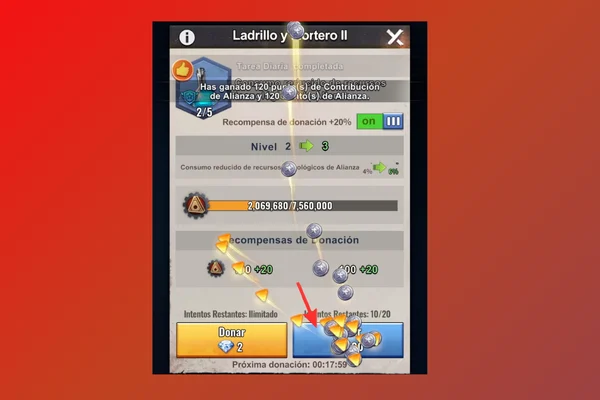
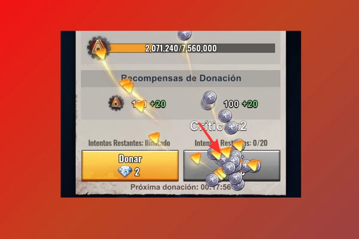
En vez de hacer click repetidamente para donar, mantén presionado el botón. Activa multiplicadores ×2, ×5, ×10 para donar más rápido y obtener más puntos.
Leer más →

Cuando recibes un informe de reconocimiento, haz click en las coordenadas debajo del nombre del jugador para ir directamente a su ubicación en el mapa.
Leer más →

Las cajas de recursos escalan con tu nivel de Sede. Guarda las cajas doradas y úsalas después del nivel 27+ para obtener hasta 10× más recursos.
Leer más →

Las cuentas farm te permiten generar recursos extra y enviarlos a tu cuenta principal. Aprende dos métodos para crearlas en tu mismo servidor.
Leer más →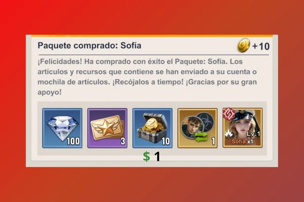
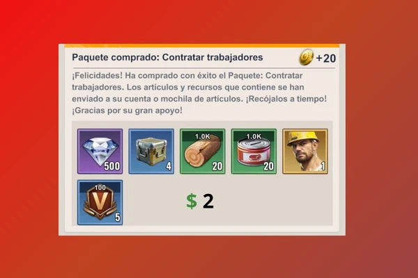
Si vas a gastar dinero, prioriza Sophia ($1) por su habilidad de construcción y el 2º Constructor ($2) para acelerar tu progreso desde el inicio.
Leer más →